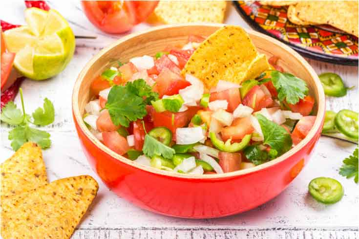
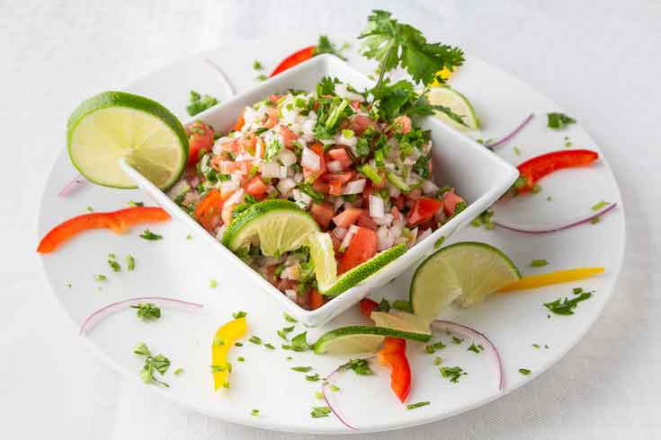

<div class="container" style="width: 80%;margin-top: 64px;max-width: 1080px;margin-bottom: 100px;">
    <div class="row">
        <div class="col col-12 col-md-9">
            <div class="artcont">
                <h1 class="articletitle">PLANTAINS! A STAPLE FOOD IN LATIN AMERICA’S COUSINE</h1>
                <span class="artdata">by admin | Jul 14, 2022 | Uncategorized | 0 comments</span>
                


                <p></p>
                <p>Translated into Spanish, Pico de Gallo literally means “beak of a rooster.” Some believe this is
                    because it was originally eaten by pinching between the thumb and forefinger, making the shape
                    of a rooster’s beak. Pico de Gallo, however, has nothing to do with roosters.</p>
                <p><span style="font-size: 14px;">Pico de Gallo is a traditional Latin American dish that comes from
                        a rich cultural and culinary history in Mexico. It’s believed that this amazing dish was
                        derived from the ancient Aztec culture, and widely popularized in Mexican cuisine,
                        especially in regions such as the Yucatan and Sonora. A tomato-based salsa that can be eaten
                        alone or as a topping for any dish, Pico de Gallo is a staple in Latin restaurants and homes
                        around the world.</span></p>
                <p><span style="font-size: 14px;">To be an authentic Pico de Gallo, the salsa must include fresh
                        ingredients: diced tomatoes, onion, Mexican green peppers (try serrano or jalapeno),
                        cilantro, and lime juice. Pico de Gallo also contains less liquid than traditional salsa and
                        it’s never blended and always made with diced and chopped ingredients.</span></p>
                <p><span style="font-size: 14px;">The beauty of Pico de Gallo is that you can customize the
                        ingredients to suit your taste. If you like it hot, use more spicy peppers and leave in some
                        seeds. If you don’t, forget the peppers. You can simply leave them out or replace them with
                        an ingredient you prefer, such as green bell peppers, black beans, or corn.</span></p>
                <p><span style="font-size: 14px;">Made with fresh produce, Pico de Gallo is one of the healthiest
                        additions to any authentic Latin American cuisine! The tomatoes and peppers in the salsa are
                        known for preventing colds and strengthening your immune system and can serve as a blood
                        thinner thanks to the onion. If you add garlic or jalapeno, your Pico can have
                        anti-inflammatory properties as well, so eat on! Try using Pico and guacamole as a topping
                        for the best chicken you’ll ever eat, mix it with your eggs for a colorful breakfast, serve
                        it with tortilla chips, use it as a taco topping, or as an ingredient in quesadillas or
                        burritos.</span></p>
                <p><span style="font-size: 14px;">Don’t forget to stop by Riverview Fresh Market, your favorite
                        Latin Market and add to your shopping list all the ingredients to create your Pico de Gallo.
                        We also carry it ready to eat in small, medium or large bowls and it’s available to purchase
                        online. <strong style="font-size: 14px;"><a
                            href="https://www.restaurantlogin.com/api/fb/w0_m9_y">Visit our DELI
                            MENU</a></strong> , You will find it under the salads
                            category.</span></p>

                            
                

            </div>
        </div>
        <div class="col col-12 col-md-3 recentcol">
            <h1>Recent post</h1>
            <app-menuarticles></app-menuarticles>
          
        </div>
    </div>
</div>
